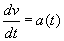
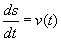
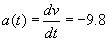
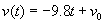
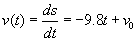
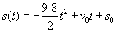

We have seen that, given the position function for an object in motion, s (t), we can find the velocity function, v(t), by taking the derivative of s and can find the acceleration function by taking the derivative of v.
Instead, suppose we are given the acceleration function and the initial velocity and position. Using antiderivatives we can then find v and s. Let a(t) be the acceleration function, v0 be the initial velocity and s0 be the initial position. Solving the differential equation

will give us v(t) (where the constant of integration, C, is v0 in this case). Once we have v, we can then solve
to find the position function (where the constant of integration, C, is s0 in this case).| See About the calculus applets for operating instructions. |

so finding the antiderivative we get
This is the straight line graphed in the center.

so finding the antiderivative gives us
which is the parabola graphed on the right. It is worth remembering that this parabola is not the path of the object in motion. We are looking at one-dimensional motion here and the right hand graph shows position (e.g., height above the ground) versus time.
You can enter your own acceleration function to explore more complex examples. Each graph can be panned and zoomed independently.